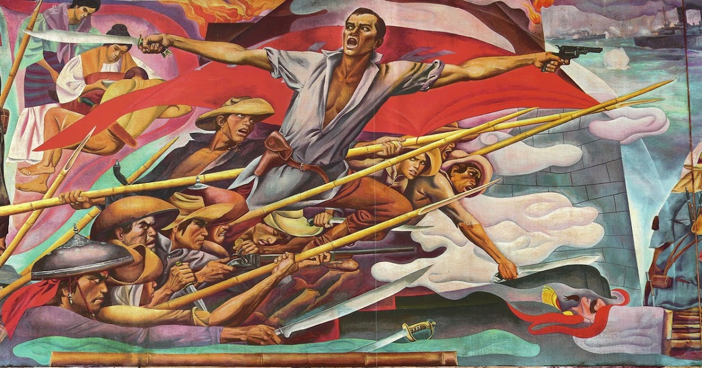

Revolutionaries

Click to preview
Filipino Revolutionaries
Bonifacio: Used “Rizal” as a Katipunan password; translated Mi Último Adiós.
Jacinto: Kartilya reflected Rizal’s emphasis on character and education.
Mabini: Admired Rizal’s intellectual discipline.
Antonio Luna: Respected Rizal’s scientific mind and integrity.